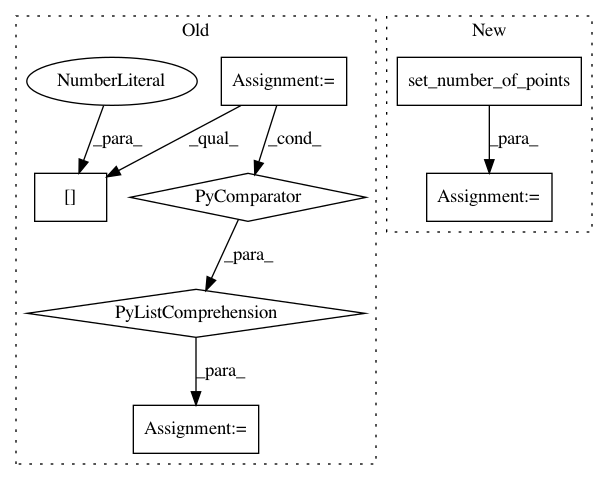

7a767c867a4f582ab51db1a0028d6636ac29f4ec,dipy/segment/benchmarks/bench_quickbundles.py,,bench_quickbundles,#,37
Before Change
bbox_valid_check=False).streamlines
fornix_streamlines = Streamlines(fornix)
fornix_streamlines = [set_number_of_points(i[0], nb_points)
for i in fornix_streamlines]
// Create eight copies of the fornix to be clustered (one in each octant).
streamlines = []
streamlines += [s + np.array([100, 100, 100], dtype)
After Change
bbox_valid_check=False).streamlines
fornix_streamlines = Streamlines(fornix)
fornix_streamlines = set_number_of_points(fornix_streamlines, nb_points)
// Create eight copies of the fornix to be clustered (one in each octant).
streamlines = []
streamlines += [s + np.array([100, 100, 100], dtype)
In pattern: SUPERPATTERN
Frequency: 3
Non-data size: 7
Instances
Project Name: nipy/dipy
Commit Name: 7a767c867a4f582ab51db1a0028d6636ac29f4ec
Time: 2019-07-31
Author: skab12@gmail.com
File Name: dipy/segment/benchmarks/bench_quickbundles.py
Class Name:
Method Name: bench_quickbundles
Project Name: nipy/dipy
Commit Name: 7a767c867a4f582ab51db1a0028d6636ac29f4ec
Time: 2019-07-31
Author: skab12@gmail.com
File Name: dipy/tracking/tests/test_distances.py
Class Name:
Method Name: test_LSCv2
Project Name: nipy/dipy
Commit Name: 7a767c867a4f582ab51db1a0028d6636ac29f4ec
Time: 2019-07-31
Author: skab12@gmail.com
File Name: dipy/align/tests/test_streamlinear.py
Class Name:
Method Name: fornix_streamlines